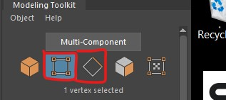
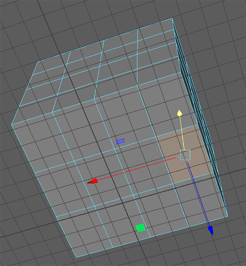
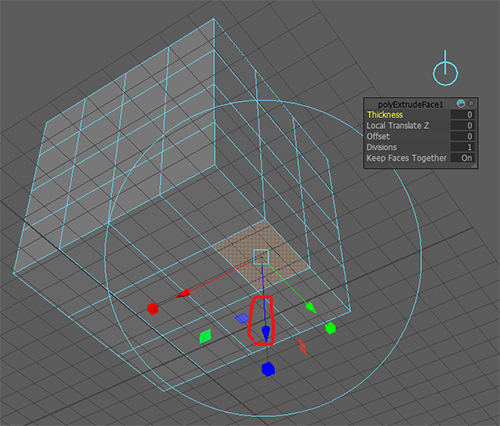
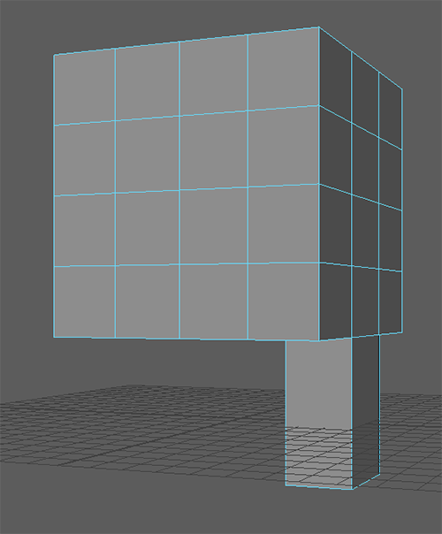
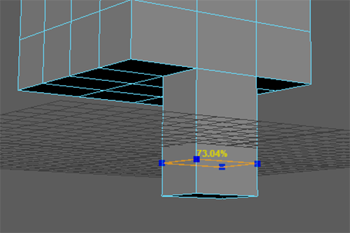
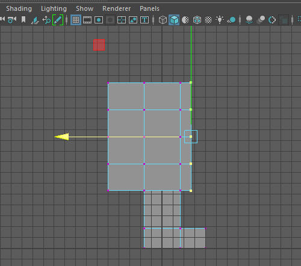
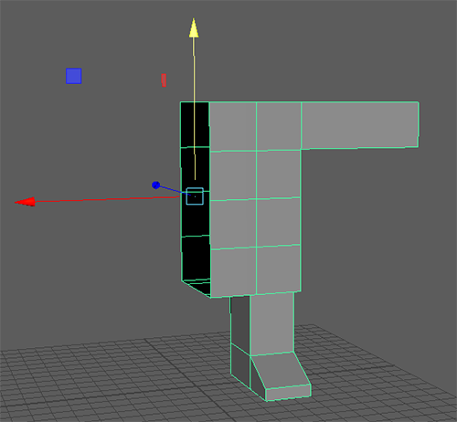
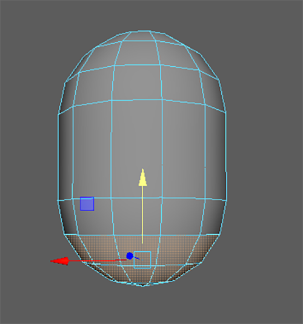

All the machines in the lab have Maya installed, if you want you use your own machine follow the installation guide.
It is essential that you have a mouse.
In the last worksheet we manipulating whole objects. However, each polygon is made of different components that we can manipulate individually to give us more control.
They are faces, Edges and Vertices


You can undo at an point by pressing ctrl or command and z.
Try to do the same thing with the edge and vertex selection modes


Another way to access the vertices, edges and faces is to hold down the Right mouse button over the polygon and then let go over the option you want.

To to back to selecting the whole object
For the rest of this worksheet we will create a very simple character using the box modeling technique, starting with a simple shape we will extrude out details.
We will create one side, and then mirror it.
It will create a cube with the same parameters as the one you created earlier.






Press q to quit out of the extrude tool when you have finished.
To learn more about extrusion see the extra videos section in learning materials on Blackboard.
Next we are going to add some more edges so that we can create a foot.

You can use this tool to add individual edges, but we are going to add a complete edge loop.

We can now extrude the foot from the leg.
Select the face at the bottom of the leg and extrude it out as we did before.
Remember to press q when you have finished to stop extruding.


We are currently looking through the perspective camera which gives us a 3D view of the character, but we can also use the orthographic views to make selecting multiple components easier.

We can now manipulate some of the vertices and edges to improve the shape.




We can manipulate the shape further by moving some of the edges.


We can clearly spend a lot of time adding more edges and manipulating them to get an increasingly complex shape but for this tutorial we will stop here.
Now that we have finished one half of our character we will mirror it.
First we are going to delete half our model.

You should now have half a character


You should now have a complete character body.
Next we want to add a head.
We could extrude the neck and head out from the torso just as we did the legs and arms, however, in we want to add a circular head that we can manipulate separately from the body.


Edges in Maya can be soft or hard. soft edges are good for rounded shapes, and hard edges are good for corners.
Most polygons will have a combination of the two.
The head of our character has some hard edges we do not want.
We want to soften all the edges on the head so first select the entire head. You can select individual edges if you need to.
Then go to Mesh Display > Soften Edge
Your head should now look like this
Deleting unneeded faces and edges is the easiest way to reduce you triangle count.
Our head currently has more triangles than it needs.
we cannot delete the edges on the top as this will effect the overall shape, but we can delete some of the edges from the middle.


If you only press delete or backspace Maya will leave behind the vertices, which wont reduce your triangle count.

Another way to reduce you triangle count is to delete hidden faces.
I would recomend you do not do this until the very end. but we can do it on our character now.
Hide the body by selecting it in the outliner and pressing h
Select the faces on the bottom of the head

Press delete
Select the body in the outliner again and press h to show it.
If you want more practice, try to add some more detail to the character.